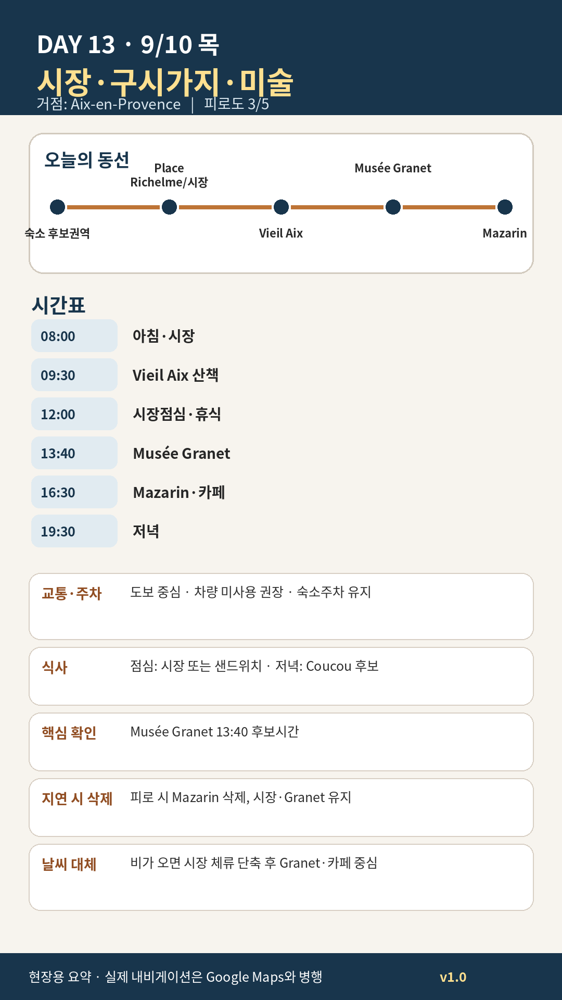

Day 13 · 9/10 목 · Aix Phase 4 최종
오늘의 감사 요약
- 핵심 실행
- 목요시장·Granet
- 권장 출발
- 08:00 시장
- 완충
- 시장 후 60분 휴식
- 최고 리스크
- 시장혼잡·보행
- 우선 삭제
- Mazarin·성당
- 대체안
- Granet·카페 중심
- 식사·휴식
- 시장점심
- 잠금 필요
- Granet
피로도
3/5
원고의 일자별 피로도 표기다.
시간표
| 08:30–10:00 | Richelme·목요시장 | 과일·chèvre·토마토·빵 소량구매 |
| 10:00–11:40 | Vieil Aix | Hôtel de Ville·Albertas·Cathédrale·Saporta |
| 11:40–12:30 | 카페·시장구매 | Weibel 또는 작은 광장 |
| 12:30–13:20 | 숙소 점심·휴식 | 40분 이상 앉아 쉼 |
| 13:40–16:10 | Musée Granet | Cézanne·프로방스·특별전 중 2개 축 |
| 16:10–17:10 | Quartier Mazarin | 미술관 뒤 느린 산책 |
| 17:15–18:30 | 숙소 휴식 | 저녁 전 회복 |
| 19:30–21:00 | Coucou 또는 La Brocherie | 첫 정식저녁 |
카드 이미지 보기

카드의 지도영역은 일정 순서를 보여주는 개요이며 내비게이션이 아닙니다. 실제 도보·운전 경로는 Google Maps에서 다시 계산하세요.